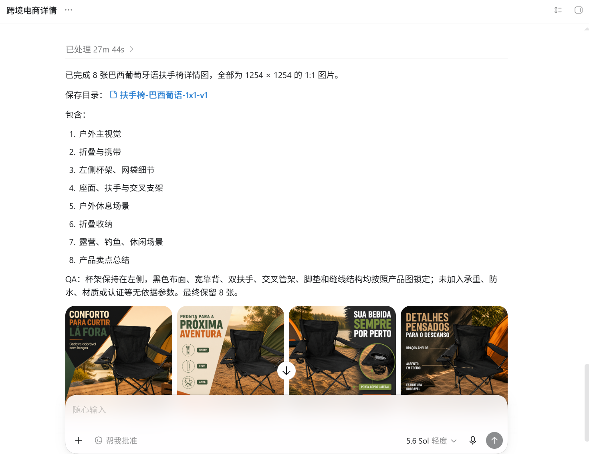
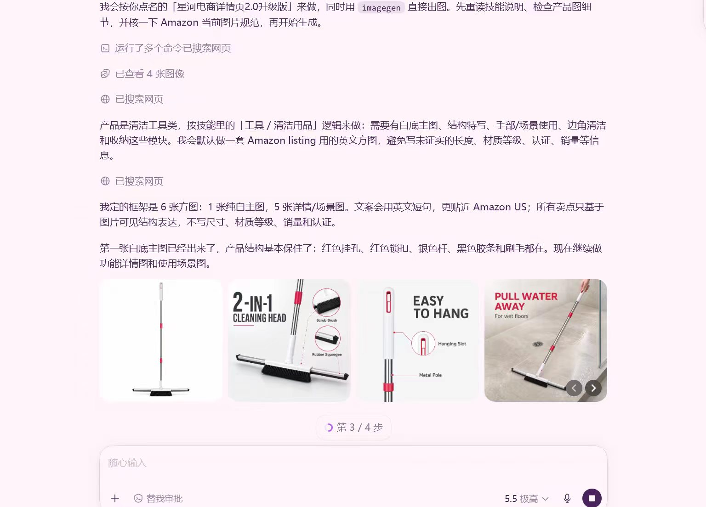
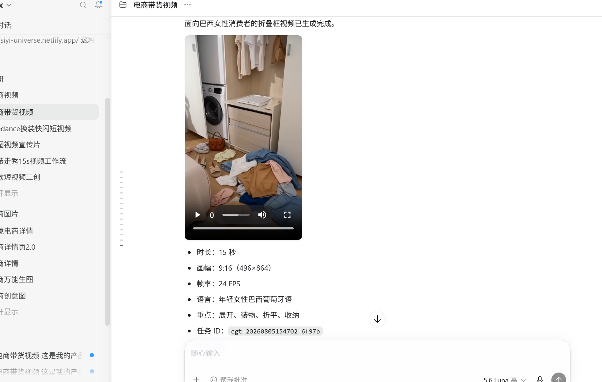
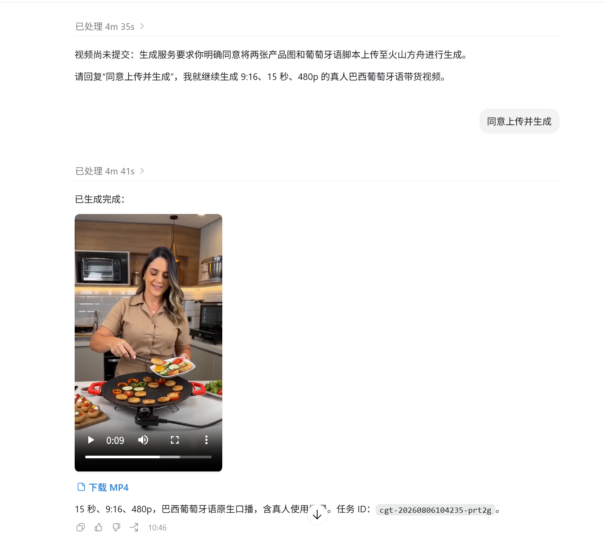
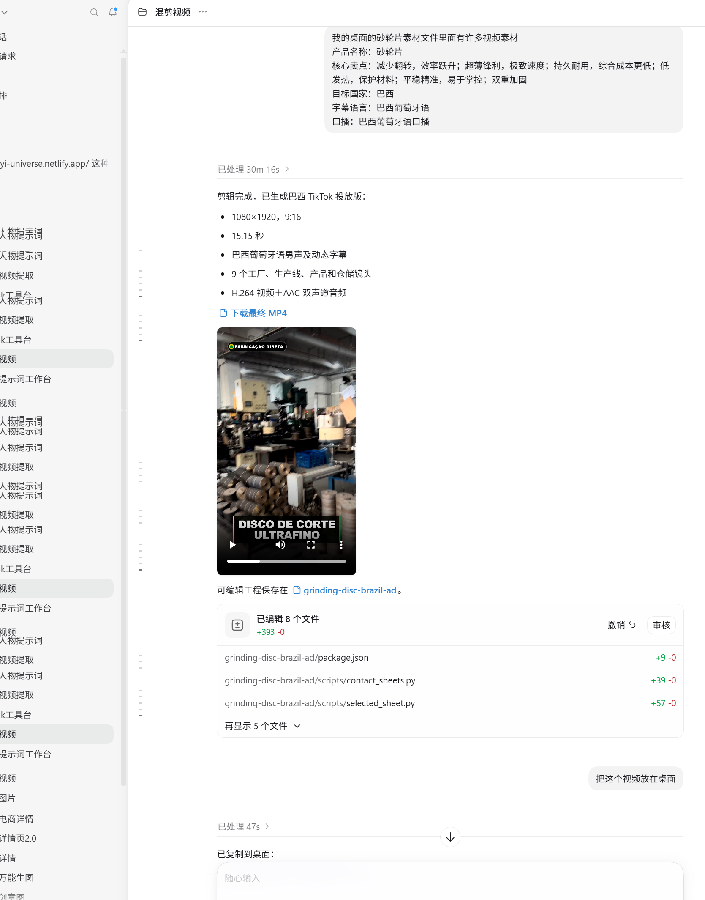
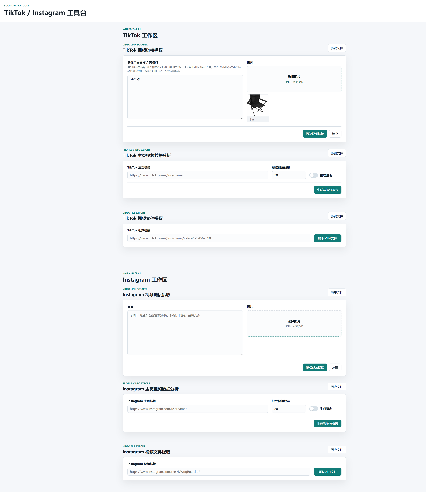
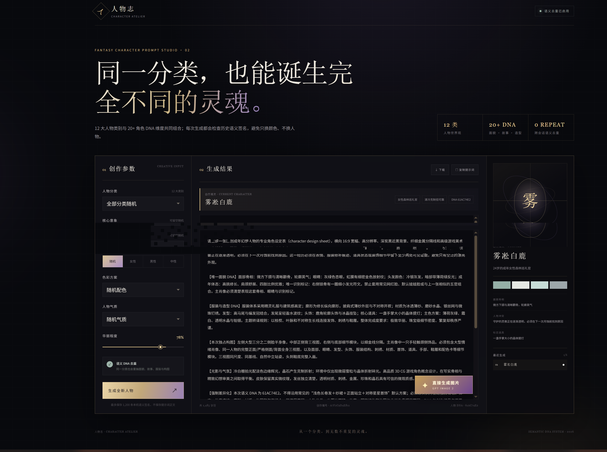

PROJECT ARCHIVE
构想，变成系统。
以业务目标为起点，利用模型、工作流、AI 视觉生成与内容自动化，搭建可复制、可验证的 AI 解决方案。
跨境电商内容自动化
围绕商品详情图、主图、B/C 端短视频与跨境详情页，建立从产品素材采集、内容生成到投放加工的自动化生产流程。
- Amazon A+、详情页与商品创意图生成
- TikTok / Facebook 素材采集、下载与二次加工
- 15 秒产品主图、带货与 B2B 展示视频
智能体与工作流研究
基于 Dify、扣子、文心、元器与 n8n 等平台，设计面向客服、内容制作和运营提效的智能体工作流。
- 企业智能客服、RAG 知识库与 7×24 接待
- 爆款文案小程序、短视频批量生成工作流
- 视频、图文内容生成编排与人工协作设计
Codex 技能训练与封装
将复杂的电商创作、AI 视觉生成与短视频工作流固化为可调用的技能包，让专业方法以更低门槛进入团队日常生产。
- AI 视觉生成、角色设定与多语言详情图
- B2B / B2C 视频生成、混剪与 Seedance 成片
- TikTok / Instagram 工具台与内容采集能力
GEO 项目管理与落地
作为项目总负责人，在豆包、通义千问、DeepSeek、腾讯元宝、Kimi、百度、讯飞星火等 AI 平台开展 GEO 策略与验证。
- 八大 AI 平台的差异化信息与内容优化
- 品牌词、产品词、行业词与长尾 Query 布局
- 回答、推荐、引用与品牌信息准确性验证
OPC 业务智能化与组织转型
围绕 One Person Company 的轻量化运营目标，将内容、获客、客户承接与数据处理等业务环节重构为 AI 可协同、可自动执行的流程。
- Codex + AI Agent + 多模型的业务自动化设计
- 图文、视频、文案、素材处理与智能客服协同
- 人工策略审核 + AI 自动执行的运营模式
PROJECT RESULTS INDEX
简历中的项目成果，
按交付方向逐条归档。
以下每一项均来自简历“项目成果展示”，并已对应归入项目档案的五大分类；点击卡片可进入对应案例与展示标签。
Codex 技能训练与跨境电商内容自动化

CODEX / VISUALAI 电商视觉生成 Skills 系统
基于 Codex 将产品分析、卖点提取、构图规划、场景设计、文案与图像生成封装为可复用工作流。
交付：主图、详情图、尺寸图、细节图、人物场景图与中英葡多语言版本。
查看对应案例 ↗
ECOMMERCE / CONTENT国内外商品详情图与卖点模块生成案例
围绕商品素材、市场语言与平台规范，建立从产品信息到可发布图文内容的自动化生产线。
交付：Amazon A+、跨境详情页、商品创意图、竞品参考图二创与本地化卖点模块。
查看对应案例 ↗
CODEX / VIDEOAI 电商视频生成 Skill
将产品信息解析、卖点提炼、脚本、分镜、场景、语言和视频生成流程标准化，适配国内外电商业务。
交付：产品展示、功能演示、细节特写、人物使用、场景广告与短视频带货内容。
查看对应案例 ↗
ECOMMERCE / VIDEO国内外产品视频与卖点模块生成案例
把本地化语言、产品卖点、人物使用与平台内容规格纳入视频生产流程，生成面向不同市场的可投放内容。
交付：15 秒主图视频、带货短视频、B/C 端展示视频与本地化卖点模块。
查看对应案例 ↗
CODEX / B2BB 端电商视频智能混剪系统
读取本地产品视频并按产品主体、使用场景、产品细节和人物展示自动筛选、组合和编排镜头。
交付：面向客户开发、产品展示、社媒推广的 B2B 营销视频；支持一键生成与自动发布。
查看对应案例 ↗
CODEX / TOOLTikTok / Instagram 电商数据采集与分析工具
面向竞品调研、爆款素材搜集、达人分析和内容选题，独立开发社媒视频数据采集工具台。
交付：主页公开视频批量获取、链接、发布时间、播放、点赞、评论等数据提取与素材整理。
查看对应案例 ↗
CODEX / CHARACTERAI 动漫角色视觉生成系统
将年龄、脸型、发型、五官、服装、体型、气质和配色等角色特征结构化，自动输出可复用角色 Prompt。
交付：正侧背三视图、面部/服装/配饰特写，以及持续优化的稳定出图规则。
查看对应案例 ↗ ECOMMERCE / OPERATIONS跨境电商运营自动化
结合 TK 平台生态判断、数据分析、视频提取与自动加工混剪，把跨境内容运营拆解为可重复执行的流程。
交付：素材采集、数据洞察、视频加工、批量发布与运营复盘的一体化链路。
查看对应案例 ↗智能体与工作流研究
 AGENT / RAG
AGENT / RAGAI 智能客服系统
基于文心智能体接入企业业务资料与知识库，自动处理客户问题、业务介绍与潜在线索收集。
交付：客服角色、Prompt、多轮对话、7×24 接待、RAG 私有知识库与转人工承接。
查看对应案例 ↗ AGENT / MINI PROGRAM
AGENT / MINI PROGRAM爆款文案生成器微信小程序
基于扣子编程完成需求分析、功能设计、Prompt 架构、工作流搭建与微信小程序上线。
交付：面向电商、短视频、广告、本地生活和企业推广的多行业营销文案一键生成。
查看对应案例 ↗AGENT / COPYWRITING爆款文案生成：数据分析与内容布局
依据产品词、用户痛点、内容结构、热点与行动引导，完成面向不同平台的营销文案生成策略。
交付：产品词梳理、卖点与痛点提炼、内容布局、爆点设计和行动号召文案。
查看对应案例 ↗ WORKFLOW / VIDEO
WORKFLOW / VIDEO抖音爆款简笔画视频自动化工作流
基于 Coze 将选题、脚本、分镜、绘图提示词、画面生成和视频组合模块化编排。
交付：从内容输入到视频素材输出的自动化执行，支持批量化、规模化生成。
查看对应案例 ↗ WORKFLOW / CASE
WORKFLOW / CASE简笔画视频生成工作流及案例
将选题与脚本、画面提示词、图像生成、视频合成和内容校对串成可复用的短视频生产模板。
交付：可批量运行的视频工作流、分镜素材与完整的案例输出过程。
查看对应案例 ↗WORKFLOW / OPERATIONS智能体工作流搭建与自动发布
围绕平台生态判断、数据分析、视频提取、自动加工混剪和一键发布，搭建可运行的运营工作流。
交付：平台判断、数据分析、内容加工与发布环节的串联式自动化编排。
查看对应案例 ↗项目图片与完整案例正在持续整理中。
联系交流 ↗